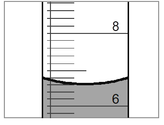

Measurement
Question 14
Below is a diagram of a graduated cylinder.

Give the volume of the liquid as measured by this graduated cylinder.
Observe the conventions regarding significant figures, and give the uncertainty of the measurement.